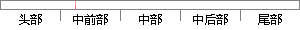

第六章主要介绍系统的测试过程，包括测试环境、功能测试和性能测试。
片段位置图

相似结果|
相似片段 1：服务。性能测试还包括稳定性测试H¨，安全测试和兼容性测试。性能测试的硬件环境的配置也是非常重要的，尽可能在服务器上进行测试。5．6本章小结本章主要介绍了系统的功能如何实现的，主要从系统开发环境、三层
相似片段 2：小结本章从功能和性能两个方面介绍了对系统的测试结果，首先介绍了测试环境，包含拓扑和各功能部件的详细配置，接着介绍了功能测试的过程，包括预警控制功能测试、欠费控制功能测试、用户计费设置功能测试和数据统计
相似片段 3：结果差的原因在于统计与报表模块涉及到对数据库大数据量的查找与运算，系统性能方面有所影响。5．5本章小结本章主要是介绍了电子公文传输系统的软件测试，首先介绍了实验室测试环境，接着从功能测试和性能测试
相似片段 4：是在真实运行环境中，通过测试用例和系统需求分析中定义的功能和质量属性把模块问题找出来。系统测试的内容包括测试环境、测试用例、测试过程和测试结果分析等。测试是软件开发过程中并不可少的一项重要的工作，通过
相似片段 5：。5.4 本章小结本章主要介绍系统的测试工作。首先，本章介绍了测试环境，测试使用的是一个小型 AFDX 网络。其次，本章介绍了系统的功能测试的情况。功能测试包括配置功能的测试和网络操作功能的测试。每种
相似片段 6：流程和相关操作。42第六章系统测试本系统主要采用功能测试、性能测试来进行测试，并且在不同的测试阶段施行自动测试、专项测试、连接测试、临界测试等多种测试手段，确保上线系统稳定可靠运行。其中，功能测试主
相似片段 7：5．4本章小结本章通过开发环境、主要流程图、核心部分实现代码、主要实现界面对系统实现进行了介绍。第六章系统测试第六章 系统测试测试主要是软件在开发过程中和开发完成后，检测软件在使用过程中有可能出现
|
※ 片段修改建议 ※
近似词参考：- 主要：首要 重要
- 介绍：先容
- 系统：体系
- 过程：进程 历程
- 包括：包罗 包孕 包含 囊括
- 环境：情况
- 功能：功效
- 性能：机能
系统自动生成语句：第六章首要先容体系的测试进程，包罗测试情况、功效测试和机能测试。
注：本片段修改建议为系统自动生成，仅供参考。